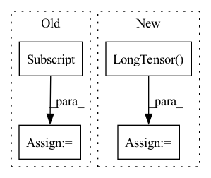

Pattern ID :7410
Before Change
mask_positions_after_reshaped.append(batch * seq_len + pos)
logits = logits.reshape(batch_size * seq_len, -1) // (batch_size * seq_len, vocab_size)
mask_logits = logits[mask_positions_after_reshaped] // (batch * label_num, vocab_size)
mask_labels = mask_labels.reshape(-1, 1).squeeze() // (batch * label_num)
loss = cross_entropy_criterion(mask_logits, mask_labels)
After Change
single_mask_logits = single_logits[single_mask_positions] // (mask_label_num, vocab_size)
single_mask_logits = single_mask_logits.repeat(len(single_sub_mask_labels), 1, 1) // (sub_label_num, mask_label_num, vocab_size)
single_mask_logits = single_mask_logits.reshape(-1, vocab_size) // (sub_label_num * mask_label_num, vocab_size)
single_sub_mask_labels = torch.LongTensor( single_sub_mask_labels) .to(device) // (sub_label_num, mask_label_num)
single_sub_mask_labels = single_sub_mask_labels.reshape(-1, 1).squeeze() // (sub_label_num * mask_label_num)
cur_loss = cross_entropy_criterion(single_mask_logits, single_sub_mask_labels)
cur_loss = cur_loss / len(single_sub_mask_labels)In pattern: SUPERPATTERN
Frequency: 4
Non-data size: 4
Instances Fragment ID: 24595591
Project Name: harderthenharder/transformers_tasks
Commit Name: bf825bb22c43795f1e3a08cf8969ddc613051e76
Time: 2022-11-30
Author: pankeyu@pankeyus-MacBook-Pro.local
File Name: prompt_tasks/p-tuning/utils.py
M Class Name: AnonimousClass
N Class Name: AnonimousClass
M Method Name: mlm_loss(6)
N Method Name: mlm_loss(6)
M Parent Class:
N Parent Class:
M File Name: prompt_tasks/p-tuning/utils.py
N File Name: prompt_tasks/p-tuning/utils.py
M Start Line: 204
M End Line: 212
N Start Line: 190
N End Line: 203
Before Change
streams[i][:n_new]
labels[i, n_filled:n_filled+n_new] = \
streams[i][1:n_new+1]
streams[i] = streams[i][n_new:]
n_filled += n_new
except StopIteration:
valid_batch = False
After Change
n_filled = 0
try:
while n_filled < self.bptt:
stream = torch.LongTensor( [next(sent_stream) for _ in range(self.bptt + 1)])
// number of new tokens to fill in
n_new = min(len(stream) - 1, self.bptt - n_filled)
Fragment ID: 24595475
Project Name: microsoft/archai
Commit Name: 429c2ddca3e98bbe44fde600f705f7578bd74678
Time: 2022-12-16
Author: gth.rosa@uol.com.br
File Name: archai/nlp/datasets/lm_iterators.py
M Class Name: LMShuffledIterator
N Class Name: LMShuffledIterator
M Method Name: stream_iterator(2)
N Method Name: stream_iterator(2)
M Parent Class: object
N Parent Class: object
M File Name: archai/nlp/datasets/lm_iterators.py
N File Name: archai/nlp/datasets/lm_iterators.py
M Start Line: 122
M End Line: 150
N Start Line: 141
N End Line: 148
Before Change
truncation=True
) // label token 转 id
mask_labels = mask_labels["input_ids"][1:-1] // 丢掉[CLS]和[SEP]
PAD_TOKEN_ID = tokenizer.convert_tokens_to_ids(["[PAD]"])[0]
mask_labels += [PAD_TOKEN_ID] * (max_label_len - len(mask_labels)) // 将 label 补到最长
tokenized_output["input_ids"].append(input_ids)
tokenized_output["token_type_ids"].append(encoded_inputs["token_type_ids"])
tokenized_output["attention_mask"].append(encoded_inputs["attention_mask"])After Change
for k, v in tokenized_output.items():
if return_tensor:
tokenized_output[k] = torch.LongTensor( v)
else:
tokenized_output[k] = np.array(v)
return tokenized_output Fragment ID: 24595488
Project Name: harderthenharder/transformers_tasks
Commit Name: bf825bb22c43795f1e3a08cf8969ddc613051e76
Time: 2022-11-30
Author: pankeyu@pankeyus-MacBook-Pro.local
File Name: prompt_tasks/p-tuning/utils.py
M Class Name: AnonimousClass
N Class Name: AnonimousClass
M Method Name: convert_example(7)
N Method Name: convert_example(5)
M Parent Class:
N Parent Class:
M File Name: prompt_tasks/p-tuning/utils.py
N File Name: prompt_tasks/p-tuning/utils.py
M Start Line: 67
M End Line: 111
N Start Line: 37
N End Line: 124
Before Change
agraph[a, i] = b
for b1 in range(1, total_bonds):
x, y = all_bonds[b1]
for i, b2 in enumerate(in_bonds[x]):
if all_bonds[b2][0] != y:
bgraph[b1, i] = b2
After Change
fbonds = torch.stack(fbonds, dim=0)
// Map each atom to all bonds going into that atom
agraph = torch.LongTensor( [bonds + [0] * (max_num_bonds - len(bonds)) for bonds in in_bonds]) // zero padding
// Map each bond to all bonds going into that bond"s start atom
bgraph = [[]] + [[bond if all_bonds[bond][0] != a2 else 0 for bond in in_bonds[a1]] for a1, a2 in all_bonds[1:]] Fragment ID: 24595632
Project Name: aamini/chemprop
Commit Name: 64f98d60d13bc4bd7131ea4453b03163503cce0c
Time: 2018-10-02
Author: swansonk.14@gmail.com
File Name: mpn.py
M Class Name: AnonimousClass
N Class Name: AnonimousClass
M Method Name: mol2graph(2)
N Method Name: mol2graph(2)
M Parent Class:
N Parent Class:
M File Name: mpn.py
N File Name: mpn.py
M Start Line: 143
M End Line: 240
N Start Line: 222
N End Line: 232